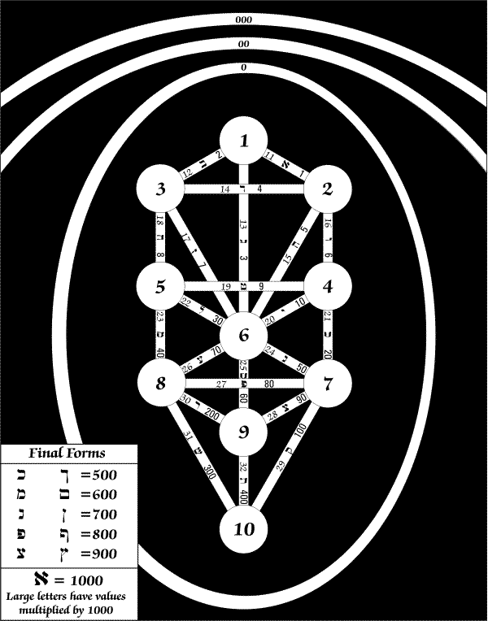
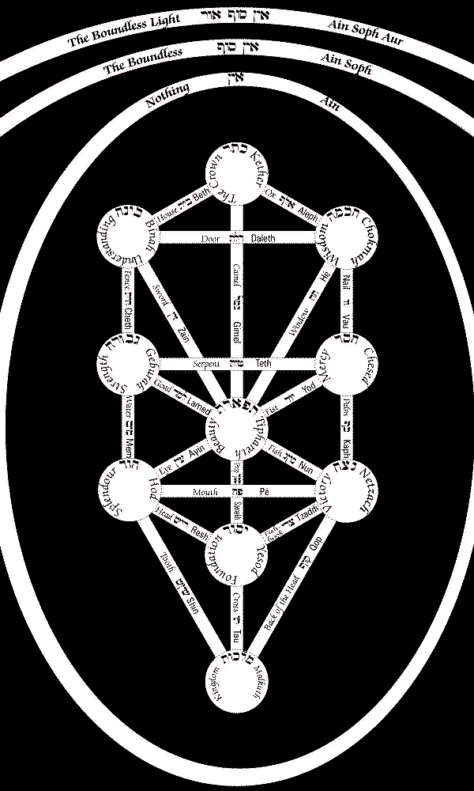
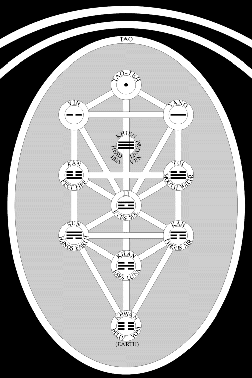
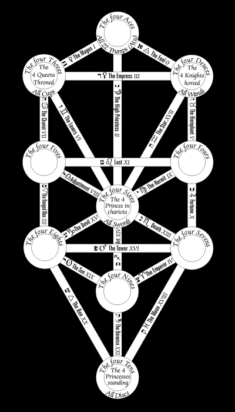
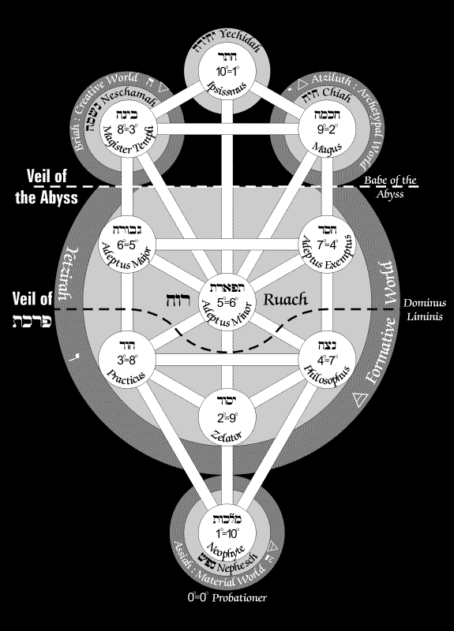

Cara Soror,
Do what thou wilt shall be the whole of the Law.
In previous letters I hope I have been able to give you some idea of the initiated conception of the Macrocosm, and also to have made it clear to you why we must all use a symbolic language, and the necessity of constructing a special alphabet as the basis of our conversations about Magick.
I have also furnished you with charts of this alphabet. It would of course have been too clumsy and cumbersome to put all the different systems of symbol on to the Tree of Life. That Tree is indeed the basis of all our classification, and I hope by now you have got fairly familiar with the process of sticking everything that turns up on its correct branch of the Tree.
In your last letter you thank me for having made clear to you the initiated teaching with regard to the Universe; and you now very rightly enquire "this being so, where do we come in?" You hold up to me one of the oldest axioms of the Qabalah. "That which is above is like that which is below," and you ask me for details. What, you enquire, is the constitution of Man? With what parts of the Great System is the Little System to coincide?
Perhaps I could hardly do better than call your attention to the description given in my essay on Man in my small book Little Essays Toward Truth.
In some respects indeed this description is not as clear as I could have wished. The fact is that this Essay was written chiefly for the benefit of those people who were already more or less familiar with the Tree of Life and its correspondences. But I do not know even to-day, twenty years later, and writing as I am to you who admittedly had no previous knowledge of any of these subjects, how to set forth the facts in more elementary terms. I warned you in the beginning that there was an essential difficulty in these studies which is not to be by-passed or dodged in any way whatever.But, after all, it is the same difficulty which every child finds when he begins any study of any kind. In Latin, for instance, he is told that mensa means a table, that it belongs to the first declension and is feminine. There is no why about any of this; no explanation is possible; the child has to pick up the elements of the language one by one, taking what he is taught on trust. And it is only after accumulating a vast collection of unintelligible details that the jig-saw pieces fall into place, and he finds himself able to construe the classical texts.
You must be patient; you must go over and over again everything that is presented to you, and by obeying you will not only come to a clear comprehension of the subject, but find yourself automatically thinking in the language which you have been at such pains to acquire.
I feel then that I must leave you with these descriptions and these charts until painfully at first, but at the end with intense pride and gratification, you find yourself spontaneously grasping the more complex combinations of these letters and words which are the anatomy of the body of our Learning.
And do not forget the old and well-worn saw: "Drink deep, or taste not the Pierian Spring!—A little learning is a dangerous thing."
Love is the law, love under will.
Yours fraternally,
666
Note: In the original this letter was accompanied by four Tree of Life diagrams, three of which were copies of those which appeared in The Book of Thoth. They have been redrawn and in some cases re-arranged in an attempt to make the information readable on a computer screen.

This figure shows the Sephiroth with their numbers only, and the Paths with Hebrew letters corresponding. The first number on each Path is its "key scale" number, the second is the numerical value of the letter.
Click here for a larger version (1200 by 1528 pixels), 111K).

This figure shows the name of the Sephiroth and the letters of the Paths in English, Hebrew and transliterated Hebrew. In the original edition the information on this and the above were combined into a single diagram which thus became unreadable in places.
Larger version (1400 x 2050, 179K)

This shows Crowley's later attributions of the Taoist principles including the eight trigrams of the Yi King to the Sephiroth. These differ somewhat from those in 777 col. XLVI and Appendix I.
Larger version (1000 x 1500, 115K)

Names of Tarot Trumps, suits and court cards have been conformed to those employed in The Book of Thoth.
Larger version (800 x 1400, 111K)

The figure on which this is based was probably a copy of the diagram accompanying the first edition of Little Essays Toward Truth and shows the A.'.A.'. grades on the Tree of Life along with the Four Worlds and the Qabalistic Soul.1
Larger version (1150 x 1600, 159K)
1: This duplicates the G.'.D.'. confusion of the parts of the soul with the four Qabalistic worlds—as started by Mathers through misinterpretation of traditional Qabalah. The error of omitting the sixth traditional part, the Guff, is also perpetuated here. No big issue, but I'm picky – WEH. The confusion between the Qabalistic worlds and parts of the soul first appears to have been perpetrated by Mathers in his introduction to Kabbalah Unveiled (s.72 and subjoined plate). The G'uph, identified with the physical body, is mentioned in the account of the Qabalistic Soul in Zalewski, Kabbalah of the Golden Dawn – T.S.
© Ordo Templi Orientis. Original key entry by W.E. Heidrick for O.T.O. HTML coding and Tree of Life diagrams by Frater T.S. for Nu Isis Working Group.
Next Chapter
Previous Chapter
Back to contents
{kind=link}
{kind=link}
{kind=link}
{kind=link}
{kind=link}